P01 / ContextPlace the studies in the reach picture
The new comparisons start from the released samples and explicit exposure assumptions.
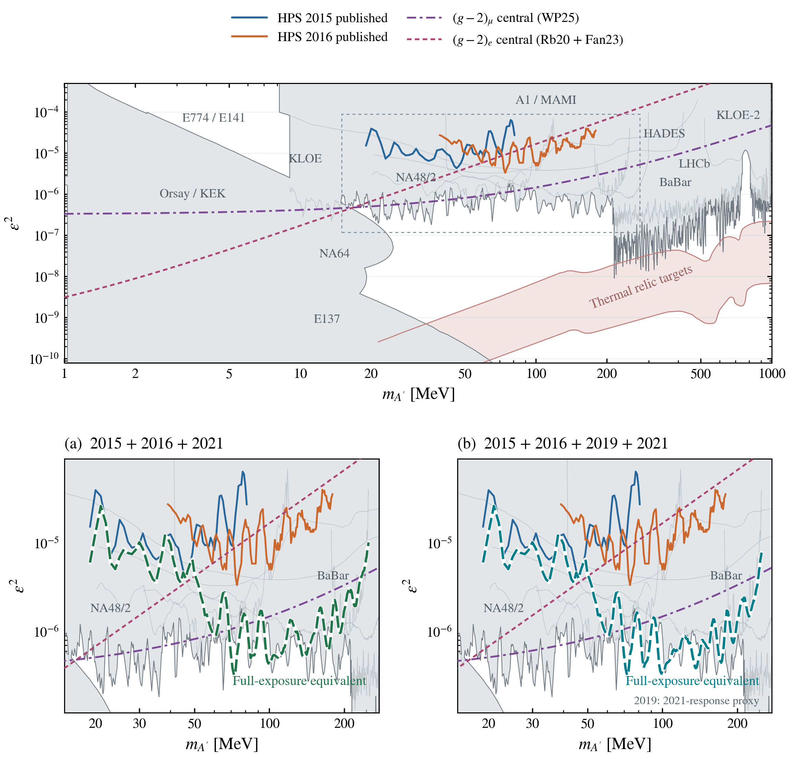
Read: Compare the matched lower panels; the added-2019 curve uses a measured 1% high-psum spectrum with borrowed 2021 response/conversion inputs.
Say: These curves show how the present samples map into an observed-equivalent full-exposure display.
Boundary: Historical world-contour context and approximate confidence-level conventions are preserved. This is not a calibrated future expected-sensitivity band.
v5p0p4_figure2_publication_20260913P02 / ContextExplain the beam-energy and geometry dependence
Magnetic transport and sensor-hit requirements replace the earlier outer-angle surrogate.
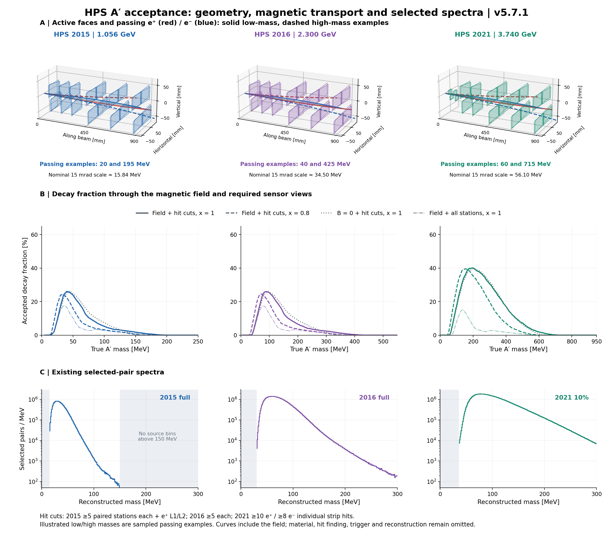
Read: Read columns by campaign. Geometry, calculated acceptance and selected mass spectra answer different questions; their vertical scales are not interchangeable.
Say: The detector geometry and boost help explain the accessible mass scales, while real efficiency requires more information.
Boundary: Conditional fixed-decay and hit fractions omit production weighting, reconstruction, trigger/selection efficiency and detector uncertainty.
v5p7p1_geometry_acceptance_20260913P03 / SignificanceKeep the raw local excesses identifiable
The conventional local display uses the unshifted signed likelihood root.
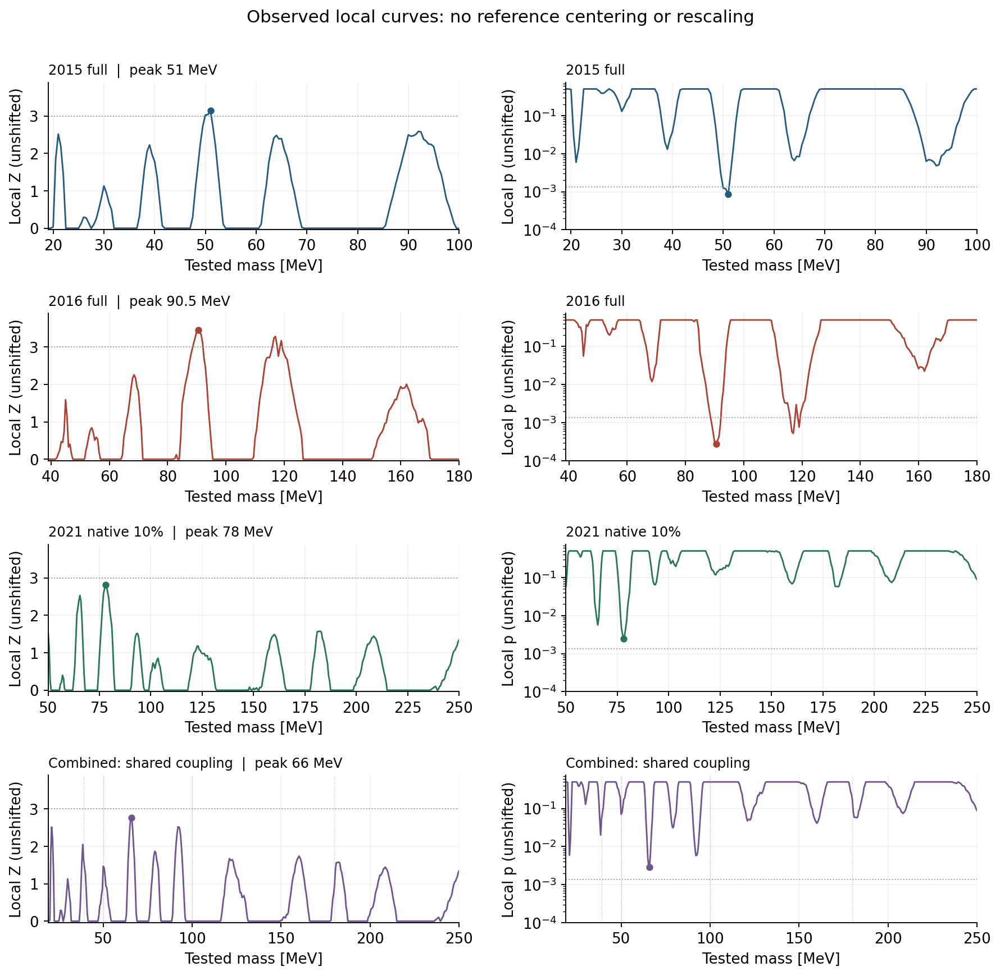
Read: Z=max(r,0) and p=Phi(-Z); deficits display p=0.5. The 2016 peak is 90.5 MeV at Z=3.4525; shared coupling peaks at 66 MeV at Z=2.7602.
Say: These are local, asymptotic summaries of the observed fits. Their ranking is preserved before any reference remapping.
Boundary: This is the September Gaussian baseline. Do not attach a global probability from a later MC window or different ordering.
v5p8p5p3_raw_significance_20260921P04 / SignificanceShow what the scan-wide correction changes
A local peak and the maximum over a mass scan have different null distributions.
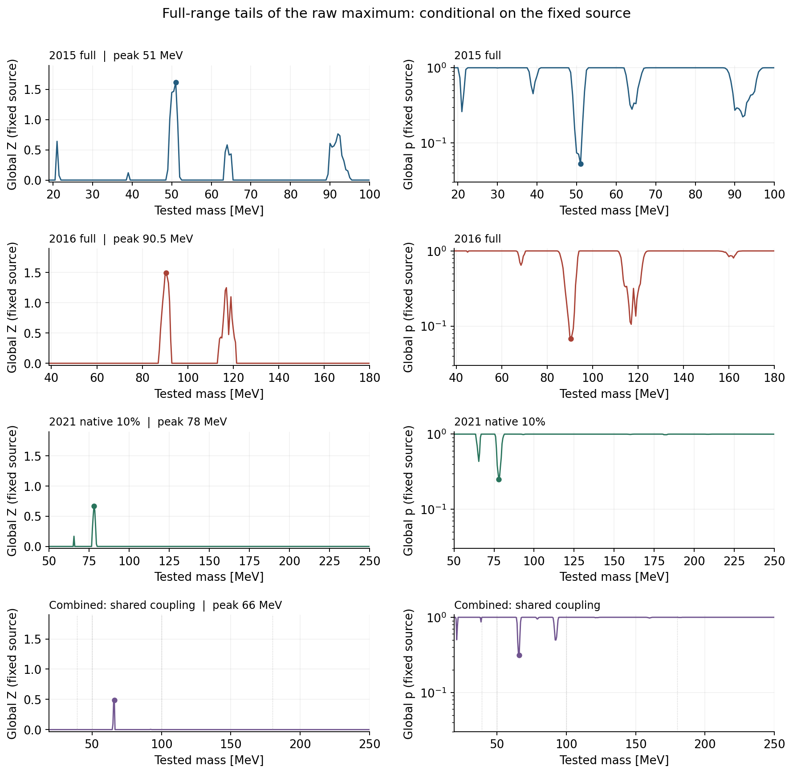
Read: The global reference uses the raw maximum and correlated whole-spectrum fluctuations. Follow each stated search domain and source definition.
Say: The probability must ask how often the whole specified search produces an excursion this large.
Boundary: The global reference is conditional on fixed observed-derived background sources; prior method and source selection are not included.
v5p8p5p3_raw_significance_20260921P05 / SignificanceSeparate a fixed-mass offset from a positive maximum
At 78 MeV the null signed-root mean is 0.548, a different effect from maximizing over mass.
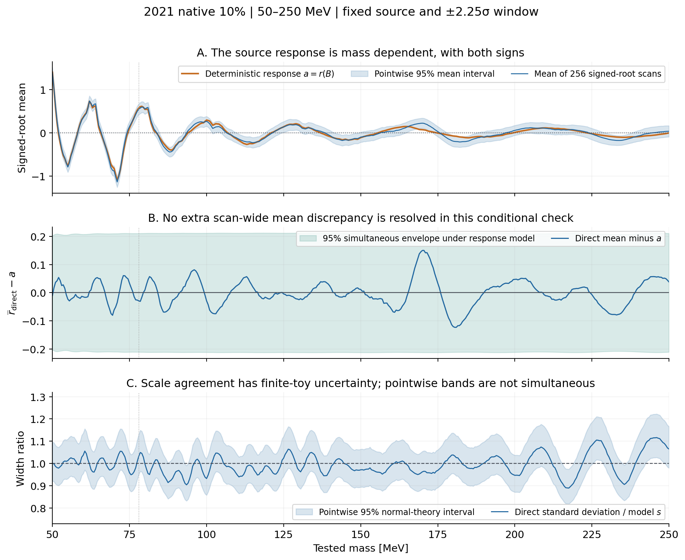
Read: Track the mass-dependent signed-root moments. A maximum tends to be positive even when individual signed estimators are centered; a nonzero fixed-mass mean needs its own explanation.
Say: The selected peak cannot diagnose bias by itself. Here the fixed-source response also shows a local offset.
Boundary: Moments and tails condition on the frozen generating spectrum; agreement with that source is not proof of physical background adequacy.
v5p9p5_null_bias_20260922P06 / PresentationUse the sideband check with its fitted-toy reference
All 42 observed values lie inside their pointwise central 90% conditional bands.
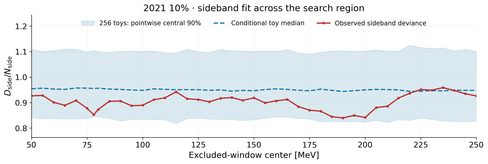
Read: Red is observed D_side/N_side; dashed blue is the median from 256 repeated spectra and shading is the 5th-95th percentiles at each center. N_side counts scored bins, not fit degrees of freedom.
Say: The reference median is about 0.95, so one is not an exact target after fitting.
Boundary: This scores fitted sidebands. Centers are correlated; pointwise agreement neither gives a global goodness-of-fit probability nor validates the excluded window.
unblind_meeting_RCmeet_20260923bP07 / PresentationExplain the standardized residual panels
The residual is a local data-minus-GP difference scaled by counting and GP uncertainty.
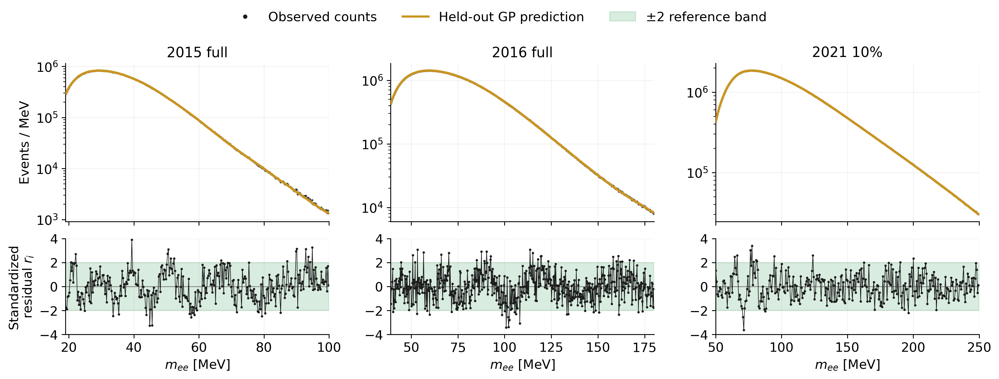
Read: Each bin uses a prediction excluding its local signal window. Zero denotes agreement; positive values denote more data. The green +/-2 region is a visual reference.
Say: These panels make local behavior readable while retaining the fact that neighboring predictions overlap.
Boundary: The curves join local predictions, not one global fit. The green band is not calibrated simultaneous coverage.
unblind_meeting_RCmeet_20260923bP08 / TemplatesKeep a controlled tail test distinct from native MC
The controlled primary comparison changes tails while preserving the central unnormalized Gaussian shape.
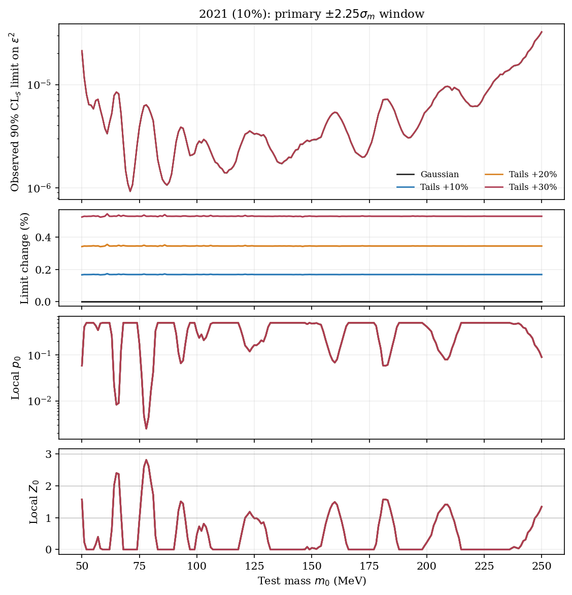
Read: Each alternative is compared to a freshly fitted Gaussian with the same +/-2.25 reference-resolution fit and exclusion mask. Full-support normalization is retained.
Say: This isolates modest tail-family effects under a matched procedure.
Boundary: It does not cover the broad displaced native MC shapes. Larger guards also change the fit bins and background prediction.
v5p9_tail_structure_20260921P09 / TemplatesShow what the native MC curves actually are
The colored curves are selected MC distributions, with fitted cores used to define coordinates.
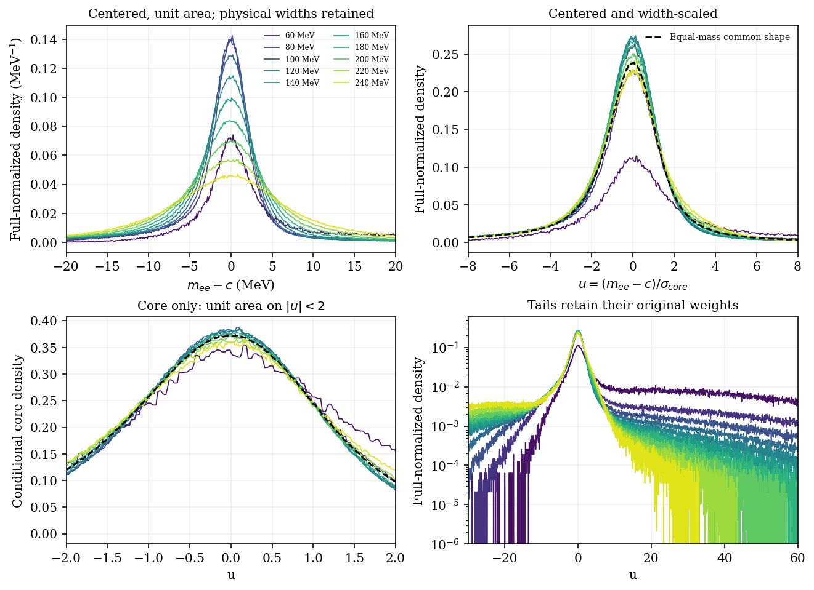
Read: Compare full distributions and the aligned core. A Gaussian center/width summary is not the empirical histogram; a common aligned shape is another model.
Say: The MC contains structure outside a narrow Gaussian core, so normalization and the training region matter.
Boundary: Selection equivalence and pure resonance association are not established for this supplied catalogue; the common shape remains conditional.
v6p1_mc_signal_templates_20260922P10 / RecoveryMeasure the signal-induced change with paired toys
Final 40-toy results show better response after shifting the window to the MC core.
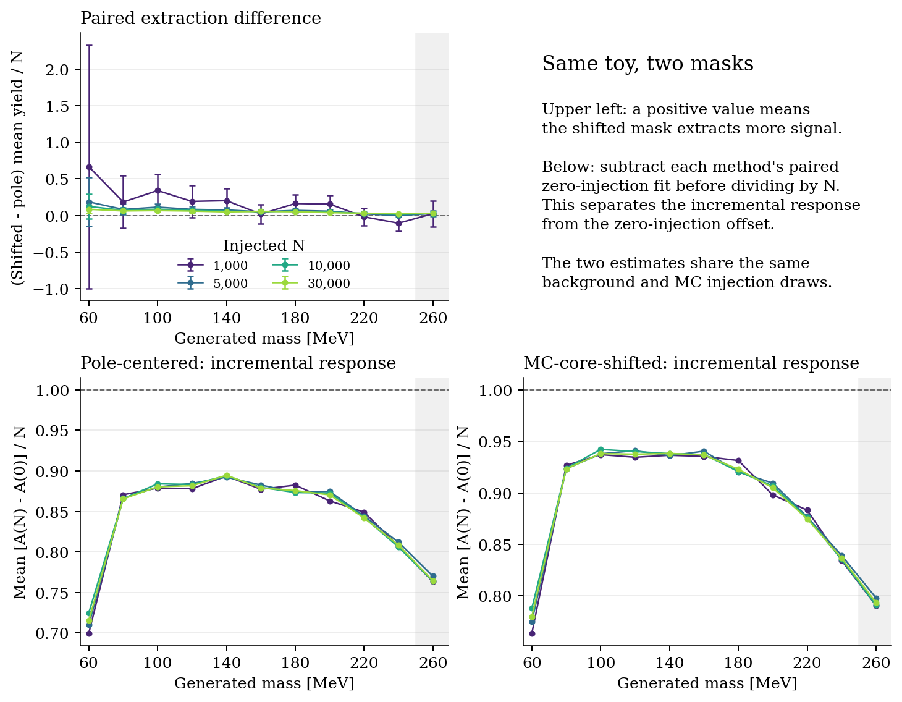
Read: At N=30,000, paired response spans 71.5-89.5% for pole windows and 78.0-93.8% for shifted windows. Pairing subtracts the same toy's zero-signal fit; it does not redefine the primary fitted yield.
Say: Centering helps, but it does not recover every injected selected candidate.
Boundary: These are exact-N injections with full-category multinomial draws. The 260 MeV extension uses the archived 250 MeV kernel anchor.
v6p2_mc_injection_20260923P11 / RecoveryUse controls to locate the response loss
Signal in GP training bins can be absorbed into the predicted background.
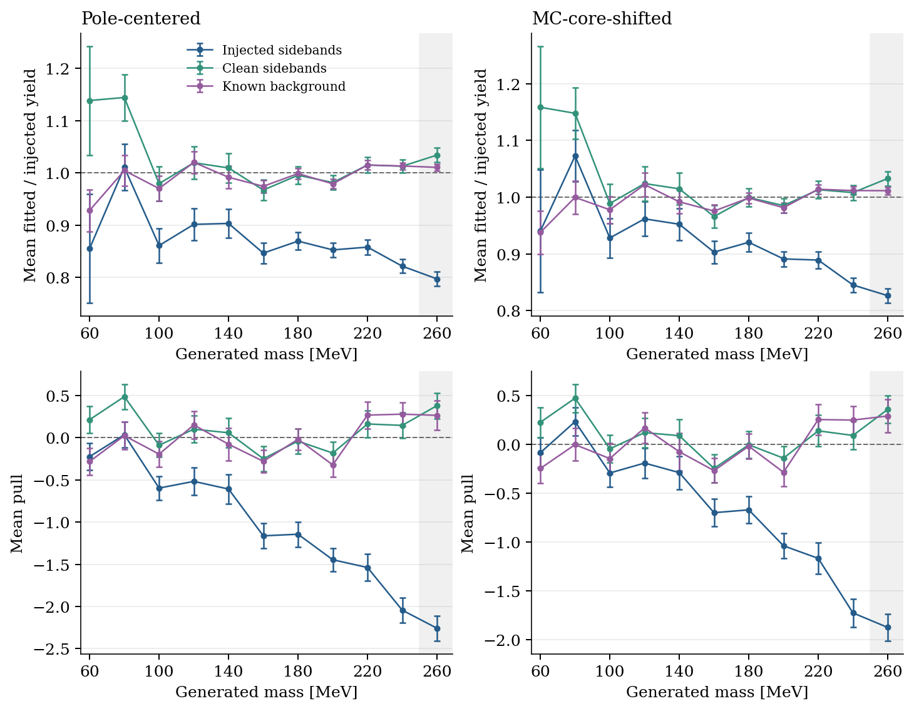
Read: Compare the contaminated-sideband result with clean-sideband and known-background controls at the same injected yield. Distinguish raw fitted/injected yield from the increment over the paired null fit.
Say: A fit can converge and still recover too little signal; the controls identify why.
Boundary: Clean training and a known background are diagnostic oracles, unavailable for a real unknown signal. Forty-toy containment is not coverage certification.
v6p2_mc_injection_20260923P12 / RecoveryCompare shapes at a common expected signal count
At z=5, paired response is 0.961-0.978 for Gaussian and 0.716-0.894 for native MC.
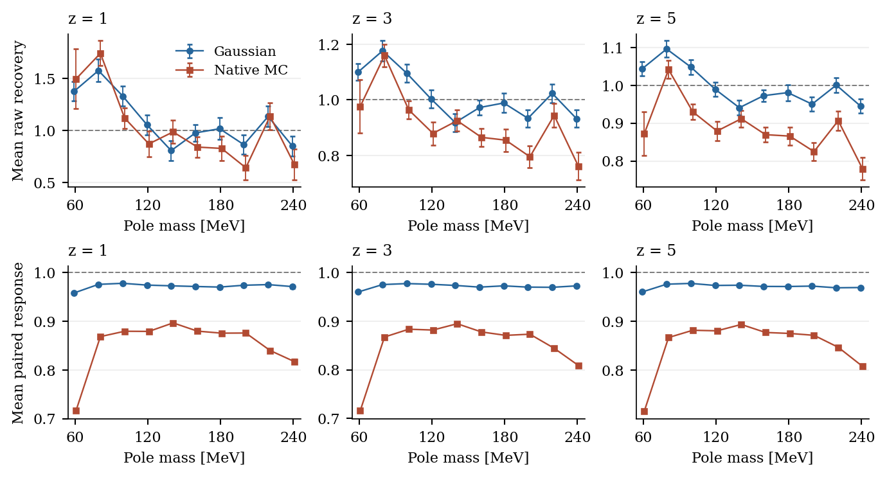
Read: An independent 100-background Gaussian pilot fixes s0(m); A=z*s0 is shared by shapes. The 100 evaluation backgrounds are paired, with independently fluctuating Poisson signal totals.
Say: Equal expected signal counts do not imply equal extraction difficulty.
Boundary: The pull truth is expected A, not the realized count. Curves summarize correlated cells, not independent measurements to average together.
v6p3p1_fixed_yield_2021_100toy_20260924P13 / RecoveryReport containment with its finite denominator
The z=5 nominal 95% signed sets contain truth in 88-98/100 Gaussian and 88-97/100 MC trials.
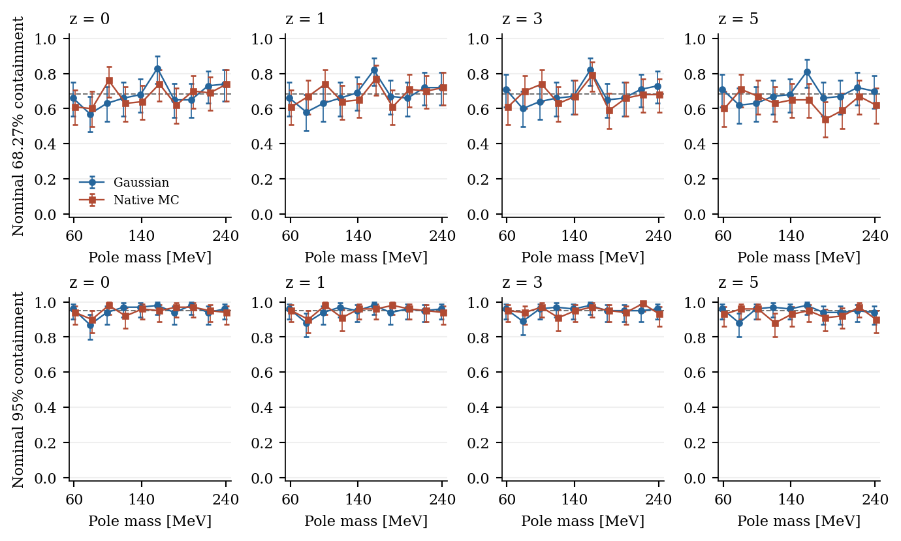
Read: These sets use the truth-fixed profile statistic and retain every attempted toy. Exact two-sided 95% Clopper-Pearson intervals quantify count uncertainty.
Say: Completeness of the run and scientific closure are different: valid fits can still show non-nominal containment.
Boundary: Signed profile-set containment is not a calibrated physical nonnegative-signal upper limit or unconditional coverage.
v6p3p1_fixed_yield_2021_100toy_20260924P14 / RecoveryMotivate the MC core-center correction
The reconstructed core shift should be measured from signal MC before observing fit performance.
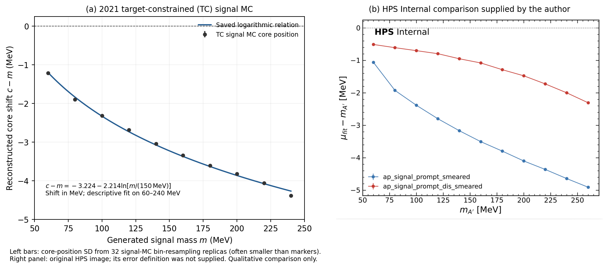
Read: The measured core shifts are compared with the stated logarithmic law and the retained user-provided HPS image. MC bars are 32-replica bin-resampling standard deviations.
Say: A reproducible core center gives a well-defined window shift, but does not fix the tails or signal response.
Boundary: The retained reference image's error definition was not supplied. The 260 MeV catalogue point is shape-only and outside the logarithmic-law domain.
v6p3p6_readability_2021_20260924P15 / RecoverySeparate offset correction from response calibration
A frozen affine correction addresses the null offset and signal response together.
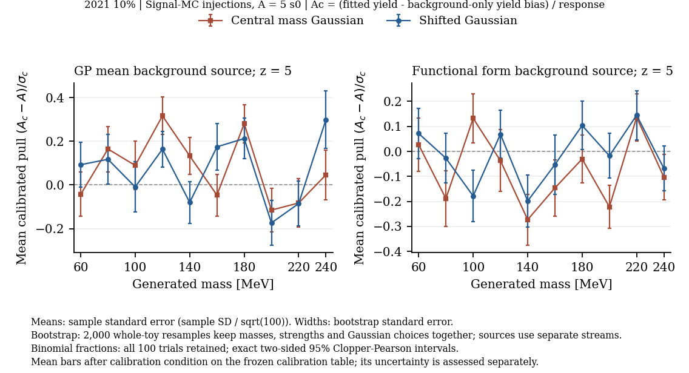
Read: A_c=(Ahat-delta)/R. The panels show mean calibrated pulls (A_c-A)/sigma_c at z=5 for two separately calibrated background sources. Bars are standard errors across 100 independent evaluation toys; calibration-table uncertainty is assessed separately.
Say: Subtracting a null mean cannot restore response. A correction needs both ingredients and an independent evaluation.
Boundary: These are source-specific diagnostic corrections, not replacements for the primary finite-grid limits or evidence of transfer between background sources.
v6p3p6_readability_2021_20260924P16 / RecoveryQuantify the signal still entering GP training
The starter window is 11.3-19.8% wider, yet 16.16-27.90% of full selected MC remains in training.
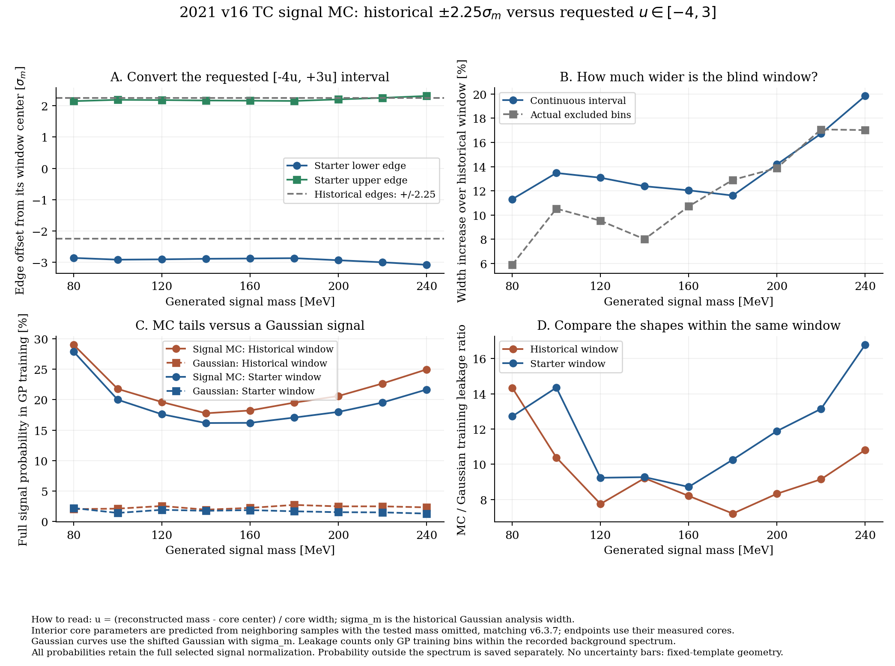
Read: Compare the old +/-2.25 reference-sigma mask with [-4,+3] fitted-core-width units over 80-240 MeV. The MC training fraction drops only 1.12-3.30 percentage points.
Say: A wider exclusion reduces leakage, but a Gaussian estimate substantially understates these MC tails.
Boundary: Fitted core width and reference resolution are different. Leakage probability is not identical to lost fitted yield.
v6p3p7_window_leakage_followup_20260925P17 / RecoveryDemonstrate the effect of training contamination
At 100/160/220 MeV, clean training changes direct-MC response from 0.959/0.950/0.909 to 1.001/0.997/1.000.
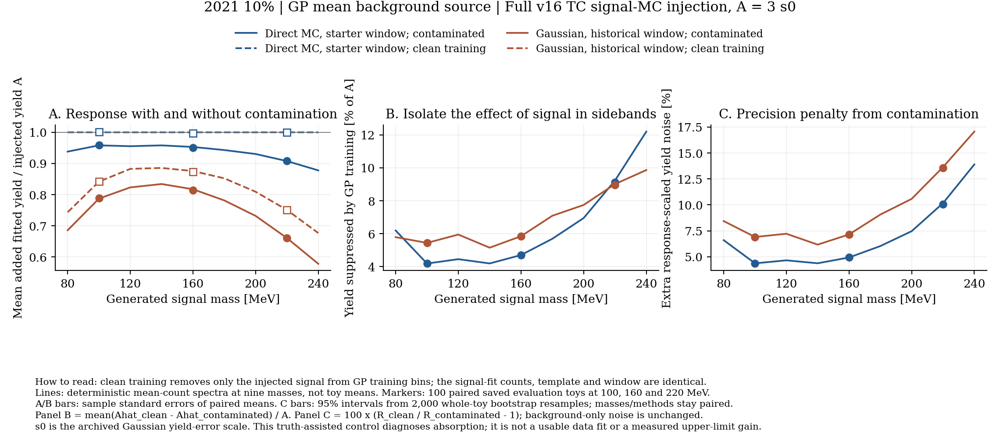
Read: Remove injected signal only from the GP training bins; keep fit counts, template and mask fixed. Mean-loss errors are paired standard errors; precision ratios use 2,000 whole-toy bootstrap resamples.
Say: For an exact MC extraction template, contamination explains almost all the mean response deficit in these tests.
Boundary: The Gaussian fit can still lose response with clean training because its shape/full-yield convention mismatches MC. This is a controlled diagnostic, not a new limit.
v6p3p7_window_leakage_followup_20260925P18 / ObservedWalk through the observed 67 MeV extraction
The selected MC fit has local asymptotic p=0.00311; 1/1,000 conditional null toys exceed it.
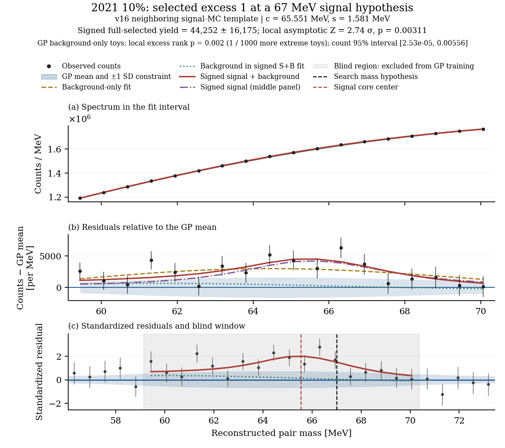
Read: Read counts, data-minus-GP residuals and standardized context together. The hypothesis is 67 MeV; the template core is about 65.55 MeV. Full selected probability in training is about 47.34% here.
Say: This example shows what the signal and profiled background each contribute to the same data.
Boundary: The selected region is local and post-selection. Rank p=2/1001 has exact 95% interval [0.0000253,0.00556]; it is not a scan-global probability.
v6p3p8_observed_morph_20260925P19 / ObservedFollow the joint scan when only 2021 changes
The MC-method common-coupling local minimum is 68 MeV: Z=2.910, p=0.001806.
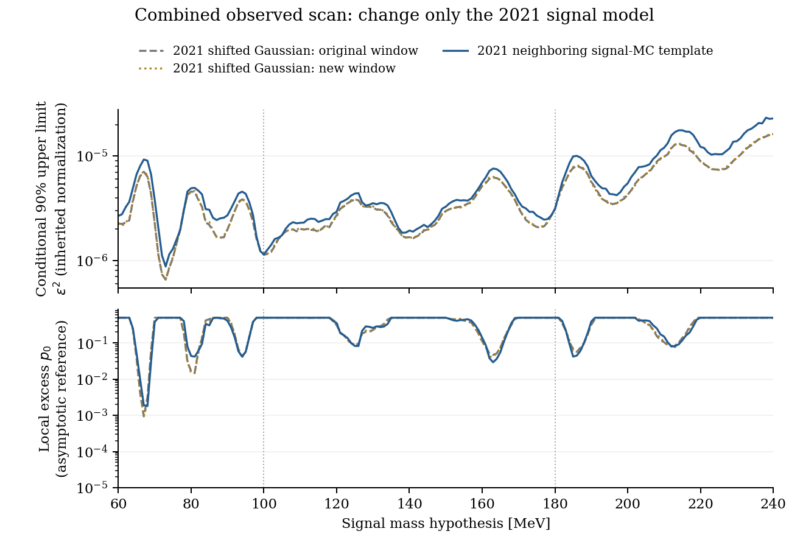
Read: Compare 2021 neighboring-MC/[-4,+3]u with the shifted Gaussian in old and new windows. The 2015 and 2016 models remain the earlier ones.
Say: The joint fit uses one coupling with independent campaign background nuisances.
Boundary: This is an observed conditional comparison. Its 0/1,000 fixed-mass exceedances imply a finite-sample bound, not zero probability or global evidence.
v6p3p9_combined_morph_20260925P20 / TemplatesMeasure the 2016 shift rather than importing 2021
Qualified 2016 cores shift down by 0.08-1.02 MeV, less than the saved 2021 shifts.
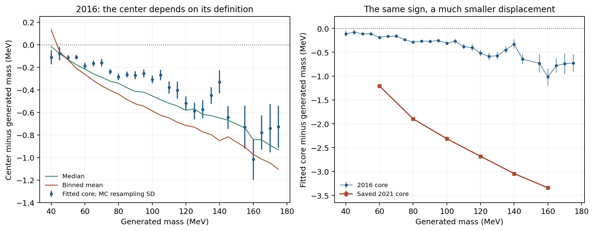
Read: Core, median and full mean are different location summaries. The comparison uses the supplied histogram already smeared/scaled with FEE corrections.
Say: The sign is similar across campaigns, but the 2021 shift law is not a 2016 prescription.
Boundary: MC bin-resampling errors and fit-definition sensitivity are separate. The 30 and 35 MeV samples remain diagnostic-only.
v6p4_2016_mc_shapes_20260925P21 / TemplatesCheck the interpolation on omitted masses
Neighboring-template interpolation gives held-out CDF discrepancies of 0.14-0.76 percentage points.
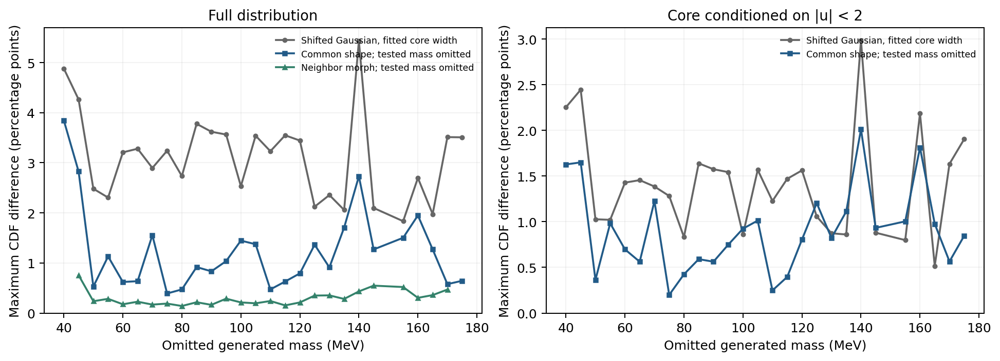
Read: Compare the shape discrepancy of an omitted native sample with neighboring-CDF interpolation, a common empirical shape, and Gaussian descriptions. Centers/widths are predicted for the held-out sample.
Say: The neighboring empirical shapes are a defensible full-shape starting point within the supplied grid.
Boundary: Descriptive MC discrepancy is not a calibrated inference error or detector-systematics estimate. No 150 MeV sample was supplied.
v6p4_2016_mc_shapes_20260925P22 / RecoveryTest whether a smaller limit really improves sensitivity
Narrowing +/-3.5u to +/-2u lowers response; response-adjusted precision changes little.
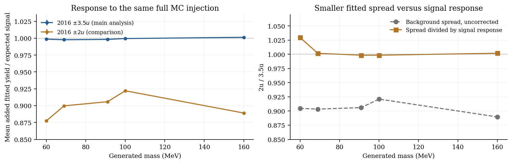
Read: Five masses with 200 paired experiments give responses 0.877-0.922 versus 0.998-1.001. The spread/response ratio between windows is 0.998-1.030; response bars are standard errors of paired means.
Say: The lower raw fit spread is largely canceled by the loss of signal response.
Boundary: The median observed limit falls 9.64%, but that alone is not a sensitivity gain. This is not the later +/-2.5u global protocol.
v6p4p2_2016_window_comparison_20260925P23 / GlobalLead with the independently checked global probability
Combined: 75/1,024 B scans, add-one p=0.07415 and 95% interval [0.05804,0.09095].
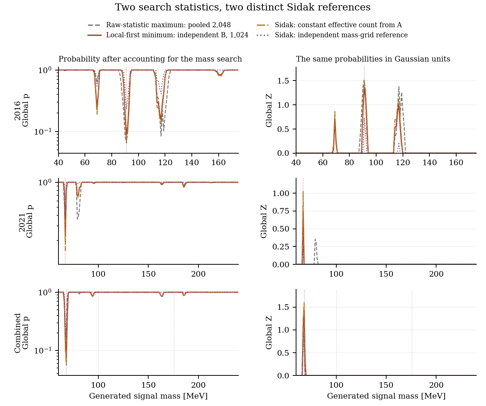
Read: A fixes mass-dependent local rank maps; independent B tests the minimum mapped p across the declared grid. 2016: p=0.08780; 2021: p=0.22634. Intervals are exact two-sided 95% Clopper-Pearson count intervals.
Say: The common-coupling result is a modest conditional scan-wide excess, about 1.45 Gaussian-equivalent sigma.
Boundary: Combined is one joint coupling, not a choice among three searches. The A-map floor is 1/1025; B ties count. Source/map uncertainty and prior selection are omitted.
v6p4p4_calibrated_local_global_20260925P24 / GlobalTreat effective-trial fits as comparisons
At the observed minima, the fitted Sidak curves lie below the direct B intervals.
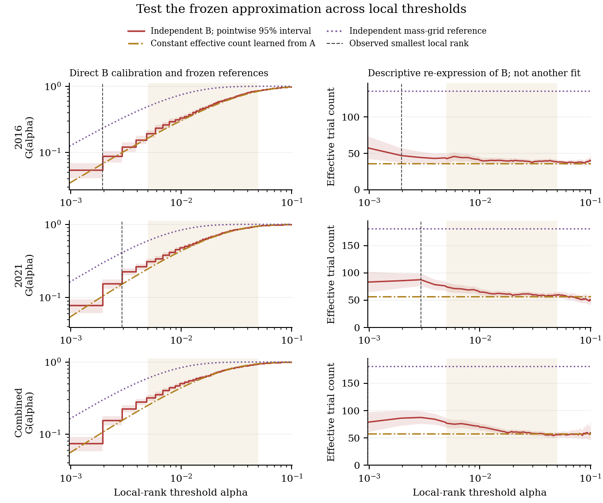
Read: One effective count was fitted using A-only thresholds 0.005-0.05; the observed minima lie below that range. B supplies an independent check of the resulting approximation.
Say: A compact trial-factor formula is useful only after its tail behavior is checked against complete scans.
Boundary: The effective count is threshold-dependent. Neither the fitted curve nor independent-grid Sidak replaces the direct B result.
v6p4p4_calibrated_local_global_20260925P25 / GlobalShow why neighboring tested masses are dependent
Overlapping masks, signal widths, tails and GP conditioning create correlated scan behavior.
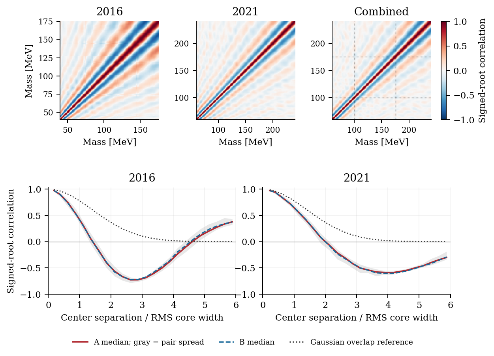
Read: Read the mass-correlation matrices and separation measured in MC core-width units. The summary bands show variation across mass pairs.
Say: The full-scan toys carry these dependencies automatically; counting mass points discards them.
Boundary: Bands over pairs are not confidence intervals. A single resolution count cannot represent every tail threshold or the changing combined model.
v6p4p5_mass_correlation_lee_20260926P26 / GlobalCompare the real scan with an independence control
Combined direct p=0.074, versus 0.133 when empirical mass dependence is broken.
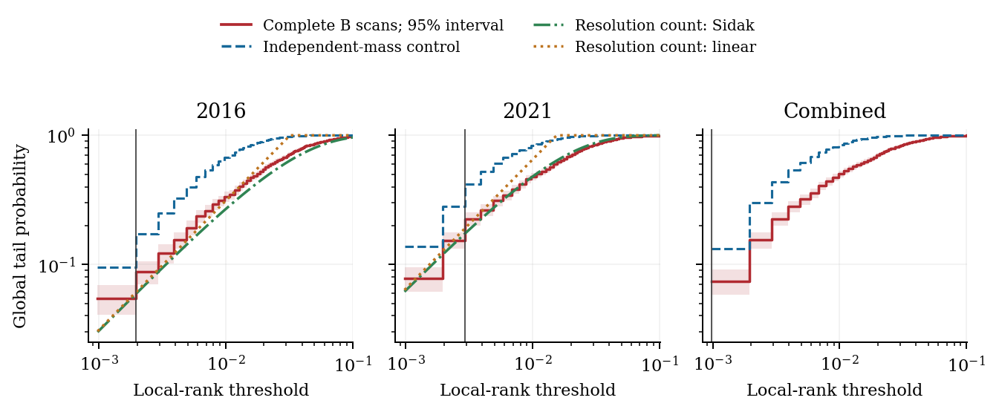
Read: The independence control preserves empirical local marginals while changing their dependence. Single-year MC-resolution Sidak gives 0.059 (2016) and 0.174 (2021), below the direct 0.088 and 0.226.
Say: Correlations reduce the penalty relative to this independence control, but the simple resolution approximation reduces it too far.
Boundary: This appendix reuses the unchanged A/B arrays; it is not a second independent calibration. No new upper limit is computed.
v6p4p5_mass_correlation_lee_20260926